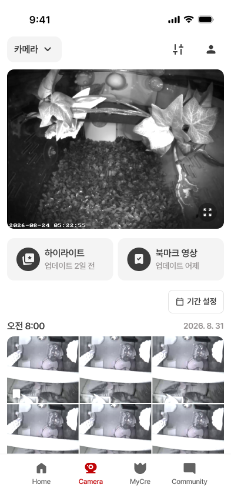
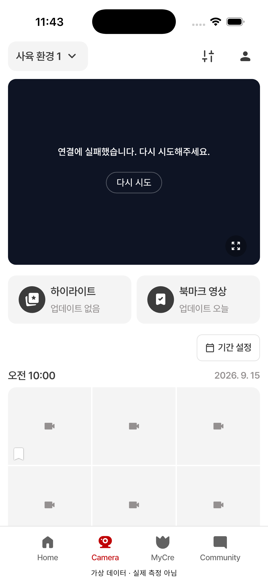

05 · 카메라 본문 기본 배치
05 카메라 본문 기본 배치 승인 · 04 홈 기본 배치·영상 비율 승인
하이라이트·북마크 카드, 기간 설정, 시간·날짜와 3열 썸네일 배치를 확인합니다.
저장된 Figma 원본과 새로 촬영한 시뮬레이터 화면입니다. 영상 연결 실패·회색 썸네일·하단 가상 데이터 안내는 QA 상태입니다. 실제 영상과 썸네일 이미지 표시 검수는 별도입니다.
Figma 원본 · 393pt
05 · 앱 · 402pt
검수 범위와 다음 확인사항